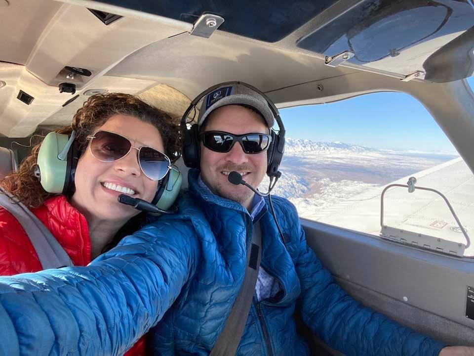

About me
Family History
I was born in 1976, and I am married to a wonderful woman named Liz and we have two daughter (Alicia and Natalie). My oldest daughter Alicia is a computer science major at UC Santa Cruz This probably is one of the main reasons I got into coding.
Hobbies
Paragliding and Hang gliding
Airplanes (flying and building)
Soccer
Playing Guitar
Spending time with my dogs (Jovi and Buddy)
Education
I got my B.S. in Physics from UC Davis in 2001 and my teaching credential the following year. I continued to study computers even though I was a math teacher. In 2015 I asked to teach computer science at Citrus Valley High School and began self-teaching myself the language of choice: Python. By the time I finished the first year in 2016 I was hooked, learning everything I could from websites like theNewBoston, The Coding Train, and CodeHS. Today, I am still teaching and teach computer science at all levels all day long. I also began refereeing in 2024 to keep up with the sport of soccer which I always have loved to play and coach.
Get in touch